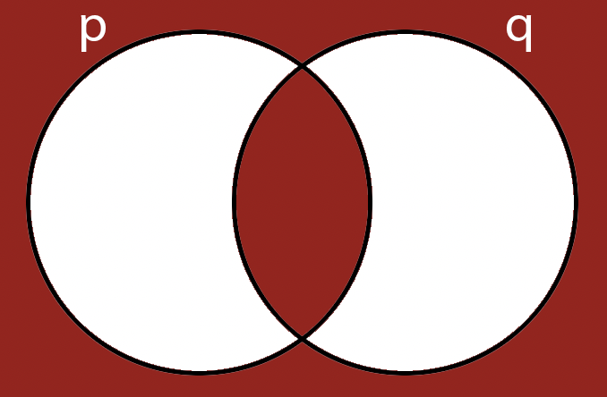
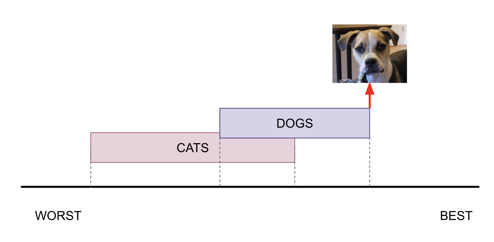

Lecture Notes 03: Logic, Proofs, and Overleaf
Outline
This class we'll discuss:
- Recap: Crash course in logic
- What makes a good proof?
- Three kinds of proofs:
- Direct
- Contradiction
- Contrapositive
- Intro to Overleaf
Recap: Logic and Logical Thinking
- We use propositions as logical operands
- propositions are statements that have a truth value (either true or false).
-
propositional logic allows us to combine propositions, in a logical computation, to obtain valid conclusions, OR with which we can detect errors in the logical computation and refute a conclusion.
-
We can operate on the propositions with logical operators:
- Negation: \( \neg p\)
- AND (conjunction): \( p \wedge q\)
- OR (disjunction): \( p \lor q\)
- XOR (exclusive disjunction): \( p \oplus q\)
- Implication: \( p \rightarrow q\)
- IFF: \( p \leftrightarrow q \)
Leftover Exercises:
Referring to Implication:
Activity 5 [2 minutes]: Can you draw the Venn Diagram for this one?
(Wait; then Click)

Referring to IFF: IF and Only IF:
Activity 6 [2 minutes]: Can you draw the Venn Diagram for this one?
If you look at the p, q, and p\( \Leftrightarrow \)q columns, you might see something that looks familiar
One possible answer:
(Wait; then Click)

Curious Constructions: Tautology
Activity 8 [4 minutes]: What can you tell about the following proposition?
\[ (p \lor q) \wedge (\neg q) \rightarrow p \]
Answer below
| p |
q |
p ∨ q |
¬q |
(p ∨ q) ∧ (¬q) |
(p ∨ q) ∧ (¬q) →p |
| 0 |
0 |
0 |
1 |
0 |
1 |
| 0 |
1 |
1 |
0 |
0 |
1 |
| 1 |
0 |
1 |
1 |
1 |
1 |
| 1 |
1 |
1 |
0 |
1 |
1 |
A Tautology is an assertion that is always true.
In its most basic form, it is:
\[ q \lor \neg q \]
Curious Constructions: Contradiction
Activity 9 [1 minute]: What can you tell about the following proposition?
\[ q \wedge \neg q \]
answer:
(Wait; then Click)
This proposition is always false!
What makes a Convincing Argument?
In spoken English we talk of "making a point".
We usually "grant" said point when the person has made a convincing argument or revealed an unforeseen truth.
As we mentioned before, using English leaves you exposed to ambiguity, contradictions, or language artifacts.
In propositional logic, we can create a convincing argument using propositional logic by chaining together a series of boolean statements until we get to the desired conclusion.
A Logic puzzle
Aleks, Benita, Chas, and Dora are quadruplets, and they’ve all been invited to a birthday party.
Unfortunately the quadruplets don’t get along very well:
- If Aleks goes to the party, then Benita will not go.
- If Chas goes to the party, then Aleks will not go.
- If Dora goes to the party, then Chas will not go.
Activity 10 [4 minutes, if we have time]: What is the largest possible number that will go to the party?
Proofs
We will see a very high-level intro to three types of proofs:
- direct proofs (deduction)
- proof by contradiction
- proof by contrapositive
To quote Wikipedia: "Deductive reasoning goes in the same direction as that of the conditionals, and links premises with conclusions. If all premises are true, the terms are clear, and the rules of deductive logic are followed, then the conclusion reached is necessarily true."
Example:
- Yak is the best dog
- half of all dogs are better than all cats
- Therefore: Yak is better than all cats
-
Here, a simple sketch might help with the clarity of the proof:

Proof by Contradiction
Start by assuming (taking as a true proposition) the opposite of what you wish to prove.
Follow the normal rules of propositional logic and if:
- You arrive at a valid conclusion: you were wrong
- You arrive at a contradiction: then the opposite of your initial assumption is true (what you wanted to prove)
Example:
Let's say we want to prove that: "there is no smallest rational number greater than 0"
(in other words: given a candidate, we can always find a smaller number)
Using proof by contradiction, we say:
- "there is a smallest rational number r greater than 0"
- however, we can make a new number s = r/2 that is >0 since r > 0
- Since s < r, and s is a rational number, then r was not the smallest (a contradiction)
- Therefore: "there is no smallest rational number r greater than 0"
Proof by Contrapositive
If we take an implication proposition as true, there is another proposition we can extract from it by performing some manipulations:
To obtain the contrapositive of a proposition, we:
- negate both terms
- reverse the direction of inference
So if we have have the proposition \( p \rightarrow q \), then, the steps are:
- negate both terms: \( \neg p \rightarrow \neg q \) --->this is not correct...yet!
- reverse the direction of inference: \( \neg q \rightarrow \neg p \) --->this is the new proposition!
So, both \( p \rightarrow q \) and \( \neg q \rightarrow \neg p \) are true.
Example:
Let's say we accept that: "For any integer k, if 3k + 1 is even, then k is odd."
We could represent this symbolically:
- \(p\) is "3k + 1 is even"
- \(q\) is "k is odd"
- Then the phrase is: \(\forall k \in \mathbb{Z}, \text{ } p \rightarrow q \)
- Then the contrapositive of the phrase is: \(\forall k \in \mathbb{Z}, \text{ } \neg q \rightarrow \neg p \)
- Which translates to: "For any integer k, if k is not odd, then 3k + 1 is not even"
- OR more clearly: "For any integer k, if k is even, 3k + 1 is odd."
An example of a full proof by contrapositive would be:
Proof: We will prove the contrapositive of this claim,
i.e. that
for any integer k, if k is even, 3k + 1 is odd.
Suppose that k is an integer and k is even. Then, k = 2m for some integer m.
Then 3k + 1 = 3(2m) + 1 = 2(3m) + 1.
Since m is an integer, so is 3m. If we say n = 3m, Then 2(3m) + 1 = 2n + 1, which is an odd number.
This means 3k + 1 = 2(3m)+1 = 2n + 1 = an odd number, which is what we needed to show.
Example from the University of Illinois Urbana-Champaign, CS173
Activity 11 [4 minutes, if we have time]:
Prove the following statement: "Theorem: For any \(n \in \mathbb{Z}\), if \(n^2\) is even, then \(n\) is even."
Proofs by Induction
Induction is a technique where we try to prove that some rule is true by showing that the rule holds for all possible cases.
We do this in a clever way (not by actually trying all cases!)
It is common for these "rules" that we want to prove true have "cases" that depend on an input of different natural number... so the cases are : \( n=0, 1, 2, 3, ...\)
First, we prove that the rule in question is true for its base case (sometimes that is \(n=0\) and sometimes \(n=1\).
Then, we want to make the induction hypothesis that the rule works for some intermediate input value (case), say \(n=k\)
Lastly, (the induction step) we must show that the rule also works for the case that follows the one from the Induction hypothesis: \(n=k+1\). We do this by relating the rule at the case \(n=k+1\) to the two previous "accepted" cases.
Example 1: Prove \( 1+2+...+n = \frac{n(n+1)}{2} \) using a proof by induction.
- Case n=1: \( 1=1(2)/2=1 \) checks.
- Assume n=k holds: \( 1+2+...+k= \frac{k(k+1)}{2} \) (Induction Hypothesis)
-
Show n=k+1 holds: \( 1+2+...+k+(k+1)= \frac{(k+1)((k+1)+1)}{2} \)
- I just substitute k and k+1 in the formula to get these lines. Notice that I write out what I want to prove.
- Now I start with the left side of the equation I want to show and proceed using the induction hypothesis and algebra to reach the right side of the equation.
\( 1+2+...+(k+1) = 1+2+...+k+(k+1) \) showing k and k+1 explicitly in the summation.
- \( = \frac{k(k+1)}{2} + (k+1) \) by the Induction Hypothesis
- \( = \frac{k(k+1)+2(k+1)}{2} \) second factor by 2/2 and distribution of division over addition
- \( = \frac{(k+2)(k+1)}{2} \) by distribution of multiplication over addition (we factored out \( (k+1) \))
- \( = \frac{(k+1)(k+2)}{2} \) by commutativity of multiplication
- \( = \frac{(k+1)((k+1)+1)}{2} \qquad\qquad \blacksquare \qquad \leftarrow \) that symbol means "Q.E.D." (what we wanted to prove)
Logical Errors
Activity 12 [4 minutes, if we have time]:
What is wrong with this statement:
If the weather is stormy, we can’t go swimming.
If we can’t go swimming, we won’t go to the beach.
We aren’t at the beach.
Therefore, the weather must be stormy.
Converse
The converse of an implication is is the result of inverting the direction of the implication, so if:
\( p \rightarrow q \)
The converse would be:
\( q \rightarrow p \)
The error would be in believing that just because an implication is true, its converse is too.
Example:
"Petting dogs makes me happy."
"I am happy, therefore I am petting a dog"
OR (Jordan's example!) "Being happy makes me pet dogs."
One way to prove this is by examining the table and noticing which information has been given:
"Petting a dog" is \(P\)
"Being Happy" is \(H\)
"If I pet a dog I am happy." is \(P \rightarrow H\)
And we know that "I am Happy" or \(H = 1\)
If we assume that the implication is true ( \(P \rightarrow H\) ) we can examine the table to see if we know enough to state that "I must be petting a dog":
| P |
H |
\( P \rightarrow H \) |
| 0 |
0 |
0 |
| 0 |
1 |
1 |
| 1 |
0 |
1 |
| 1 |
1 |
1 |
As you can see, the second and fourth rows are valid cases, and both have a different value for \(P\), which means we cannot know for sure that I am petting a dog (the converse is not necessarily true).
Inverse
The inverse of an implication is is the result of inverting (negating) its propositions while maintaining the direction of the implication, so if:
\( p \rightarrow q \)
The inverse would be:
\( \neg p \rightarrow \neg q \)
The error would be in believing that just because an implication is true, its inverse is too.
Example:
"Petting dogs makes me happy.
"I am not petting a dog, therefore I must not be happy"
You should check the table for this case as well!
Activity 12 [4 minutes, if we have time]:
Think about the following "puzzle":
A prosecutor in Logic Court (which is totally a thing) says to the defendant:
"If you committed the crime, then you must have had an accomplice" (this is known).
The defendant hotly denies that the implication is true.
Therefore, the jury (being apt logicians) convicts the defendant.
Explain what happened in this story.
If we have time: Overleaf and Latex vs Word
Typesetting is not required: legibly-written-and-then-Typed (Word/OpenOffice/etc) submissions are totally fine;
Just PDF them before you submit, please!
However, LaTeX (Latex henceforth) is a powerful tool that lets you tweak and customize ad nauseam, which might be desirable to some of you.
Also, it is the defacto standard for most academic publications.
If you choose Latex, you should start very simply; learn:
- Titles and Sections
- bold and Italics
- List Environments
- Math Environment and symbols
You can copy-paste the contents of
latex_basics.tex into Overleaf and see the tex source as well as the resulting pdf.
You can also
Import a Zip file with the necessary info. Try this one:
CSC250s22-A01.zip
here are some links to help you with:
I am happy to help with the formatting during office hours.
Before next class (Friday 01/28)
[Due for everyone]:
-
If you wish to be on a team, fill out this form to indicate one of three things:
- If you'd like to be alone or in a team
- Or to indicate that you are OK being assigned to a random team of 2 or 3 people
- Or to indicate the names of the other members of the team (each one should submit the form)
- Each team submits a single write-up (a pdf) to Moodle
- If you are in a multi-person team, only one of you submits the pdf.
- Two pieces of information required for all submissions:
-
The names of all collaborating students be listed at the top of the submission. If you worked alone, please state:
“I did not collaborate with anyone on this assignment.”
-
A “References” section, with in-line citations to any resources you used.
If you did not use any resources, please state:
“I did not use any external resources in completing this assignment.”
Before next Week's Friday 02/04 at 5pm EST
[Due for everyone]
Problem Set 1 ( which is
latex_basics.tex and it is also released in Moodle)
-
Problem Sets can be worked in teams of up to 3 students.